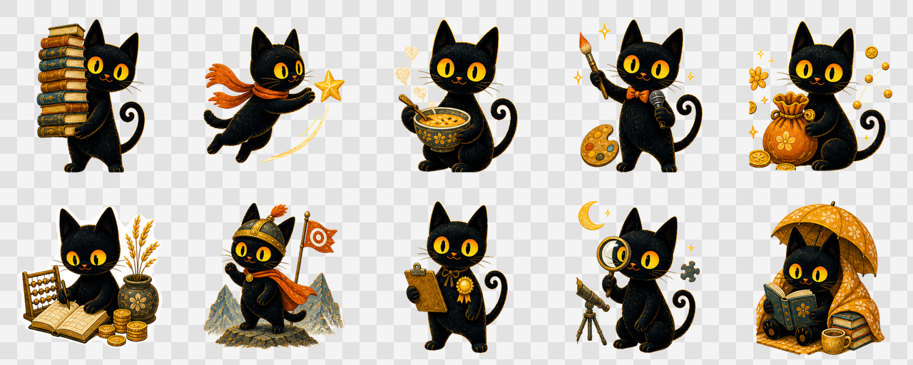
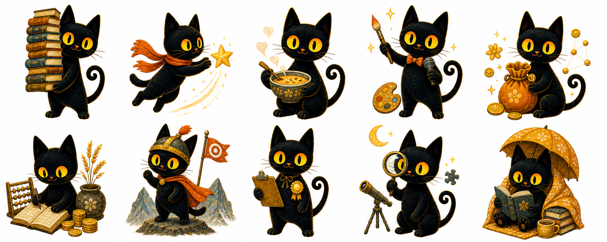
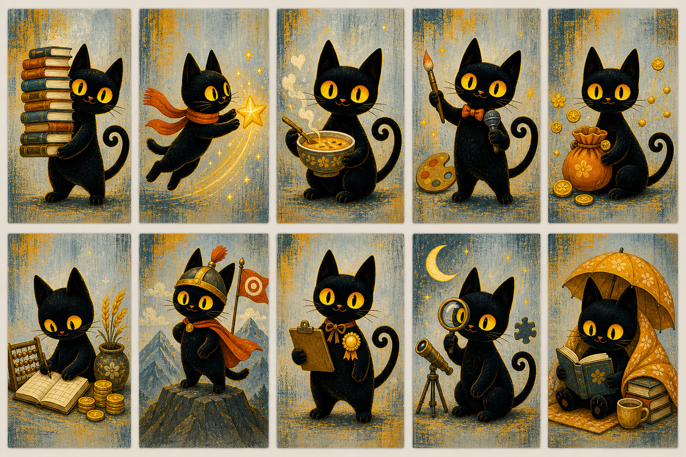
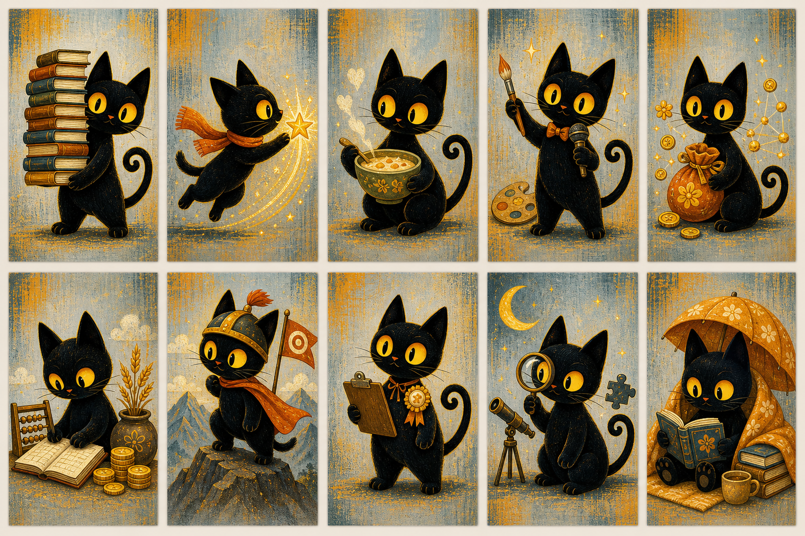
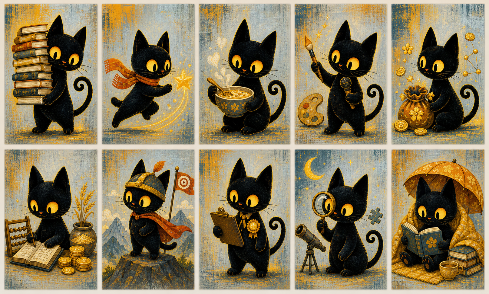
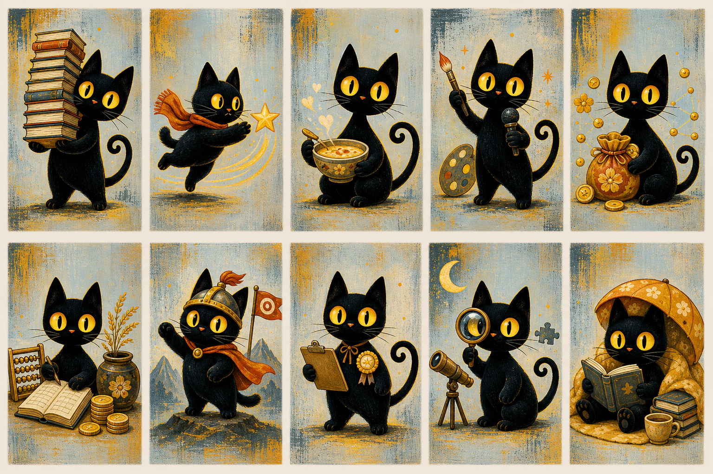
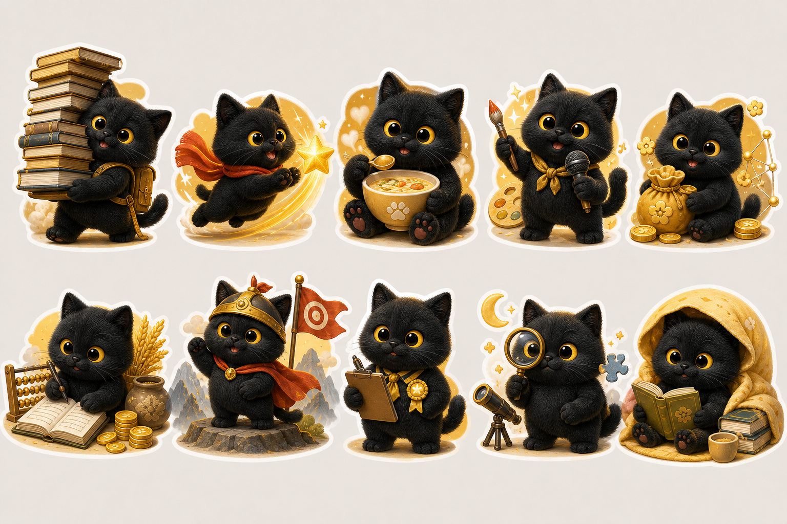
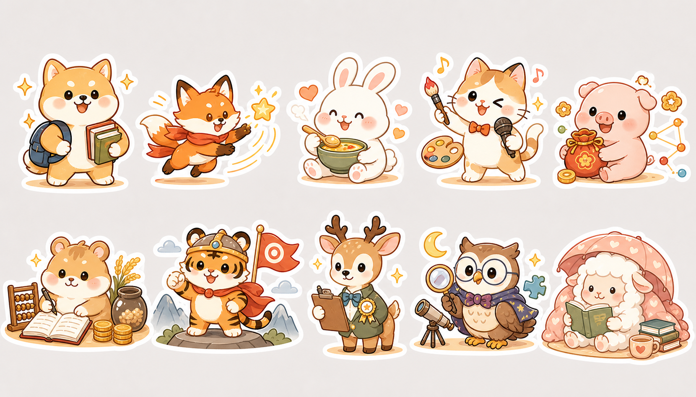
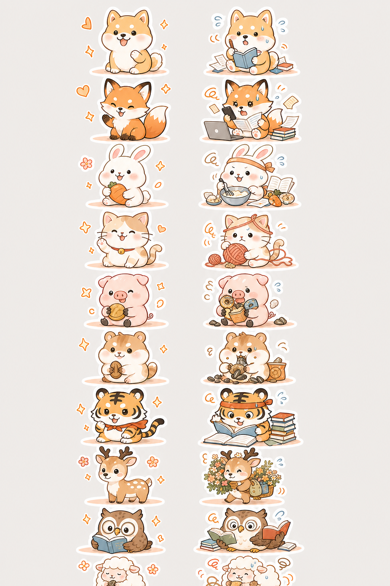
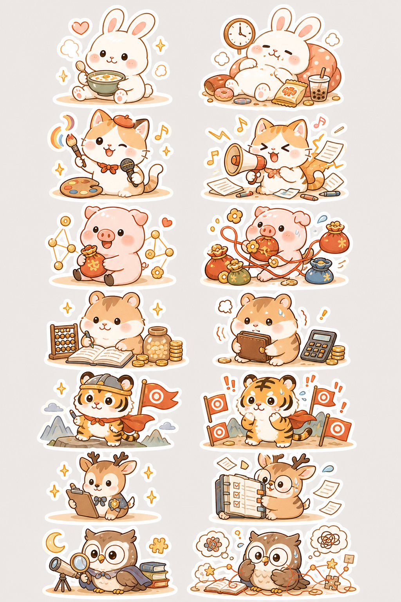

01比肩
稳稳柴喜用态
🐶
站得住，有主见，知道自己的边界。
提醒态
🐶
太想自己扛，容易硬撑或听不进建议。
同一只小动物固定代表一个十神。喜用态表达顺畅、有力量的一面；提醒态表达过度、卡住、需要调和的一面，不做负面审判。









不要只画“可爱狗”。要有站台、护盾、边界线，提醒态是一个人硬扛太多。
和比肩拉开距离，用狐狸、围巾、风线、钱袋或机会星，提醒态是拉扯太多资源。
不能只画温顺小羊。要加书、伞、毯子、被照顾感，提醒态是被保护过度。

兔子加小碗、勺子、热气。提醒态是太舒服、太慢，不要做成懒惰批判。
猫加画笔、话筒、火花。提醒态是声音过大、纸张飞散，表达太满。
小猪加钱袋、金币花、连线。提醒态是资源太多、手忙脚乱。
仓鼠加账本、算盘、粮罐。提醒态是钱包抱太紧，过分谨慎。
小虎加头盔、目标旗、山峰。提醒态是目标太多，绷得太紧。
小鹿加徽章、夹板、整齐丝带。提醒态是规则书太大，标准太满。
猫头鹰加放大镜、月亮、拼图。提醒态是想太深，被思绪缠住。
站得住，有主见，知道自己的边界。
太想自己扛，容易硬撑或听不进建议。
反应快，敢争取，能把机会抢回来。
一急就先冲，容易把关系和节奏搅乱。
松弛、有福气，能把日子过舒服。
舒服过头时，容易拖延或不想面对压力。
聪明会表达，有作品感，也有个人风格。
话太快或太尖时，容易让人跟不上。
人脉活，机会感强，懂变通也够大方。
想抓的太多时，容易分心或花得太快。
务实稳当，适合长期经营和积累。
太怕浪费时，可能错过试错和变化。
能扛压，目标感强，敢打硬仗。
太紧绷时，容易把所有事都当战场。
自律有分寸，重责任，也让人放心。
太在意标准时，容易紧张或不敢松手。
直觉敏锐，脑回路独特，适合钻研。
想太深时，容易绕进自己的小宇宙。
温厚，有托底感，重学习和保护。
被保护太久时，容易慢热或不想决定。